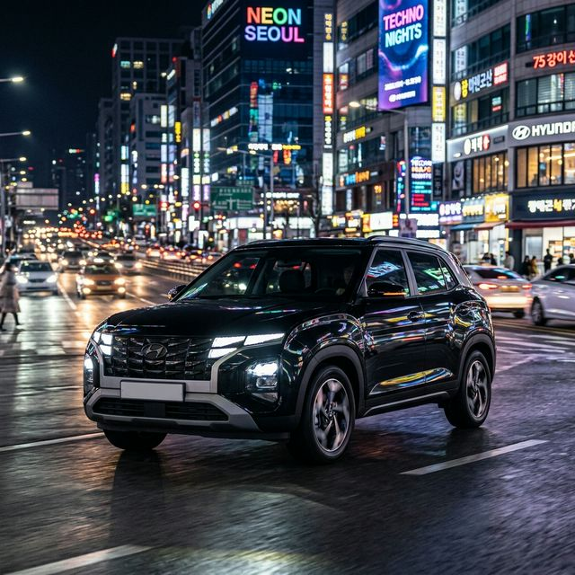
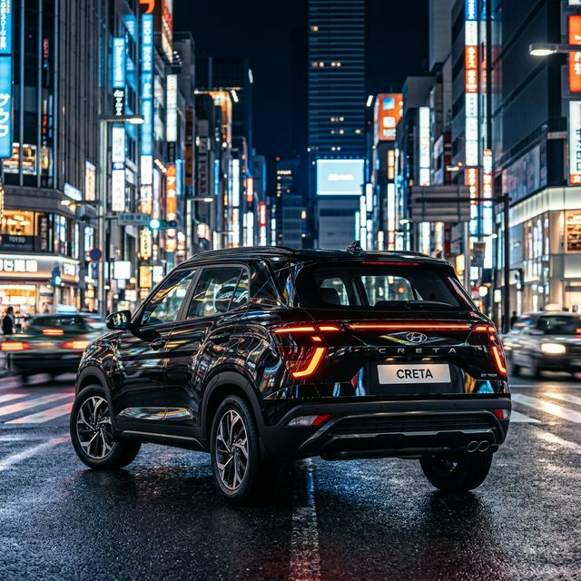

For nearly a decade, the Hyundai Creta has been the gold standard for mid-size SUVs in India. The 2026 model takes it even further with a radical new exterior and the most tech-packed interior in its class.

| Feature | Details |
|---|---|
| Engine Options | 1.5L Petrol / 1.5L Diesel / 1.5L Turbo Petrol |
| Turbo Power Output | 160 PS @ 5500 rpm |
| Mileage (Diesel) | 21.8 kmpl |
| Fuel Tank | 50 Liters |
| Sunroof | Dual Pane Panoramic Sunroof |
| ADAS | Level 2 with 19 features |
Yes, one of the signature features of the Creta is its massive vocal-command enabled Panoramic Sunroof.
The 1.5L Naturally Aspirated petrol variant delivers a mileage of around 18.4 kmpl depending on traffic conditions.
The Creta comes with 6 airbags as standard across all trims, with further safety features in top models.
No, the Creta is currently offered only in a Front-Wheel Drive (FWD) configuration in the Indian market.
Yes, the Creta offers front ventilated seats, which is a major comfort feature for the Indian climate.
The premium variants of the Hyundai Creta come equipped with a high-end 8-speaker Bose sound system.
If you want a car that "has it all"—from tech to prestige to comfort—the Hyundai Creta is still the king you're looking for.